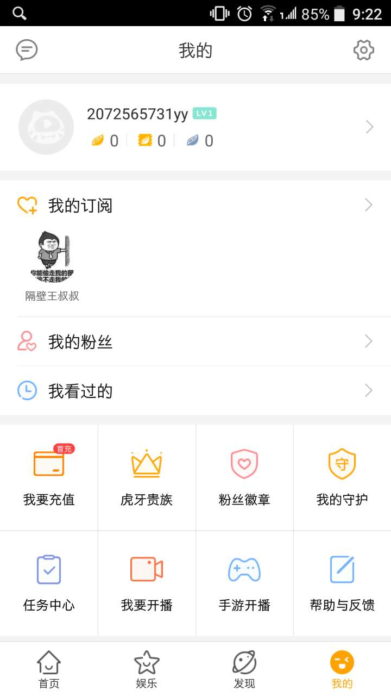

Next: Introduction, Up: (dir) [Contents]
This manual is for program, version version.
| • Introduction: |
| • App tutoiral: |
直播列表
=> 此直播，已于2017年8月6日成功录制并结束，录制地址如下:
百度网盘 => 链接: http://pan.baidu.com/s/1dFENpuh 密码: jkw7
Mega网盘 => https://mega.nz/#F!0N4FTCKa!fAtgx53oQybuH-3jlefx-Q
=> Related topic
宋宝华老师作品 怎么给Linux mainline发patch
A patch example: example
期待后续直播的同学，可以订阅: 王叔叔直播间
下一节是一个介绍如何在手机上订阅直播频道的简介。
Up: Introduction [Contents]
以下是针对手机并且需要下载app的朋友的一个简单入门教程。 以下步骤，都是在手机上操作。
==> 1. 打开王叔叔直播空间页面: http://m.huya.com/1873077328
记住王叔叔直播间的网名 "隔壁王叔叔" 以及左边的 Icon 图标，后面会用到。
点击右下角的 “打开APP”, 将会开始下载“虎牙直播” APP。
==> 2. App安装完成打开后，注册帐号。
==> 3. 从搜索栏搜索 "隔壁王叔叔"， 打开你刚才记住的那个用户，点击“订阅”
==> 4. 此后从 “我的” -> “我的订阅” 将会看到隔壁王叔叔了。
最后的效果图，如下。
